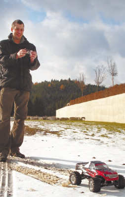
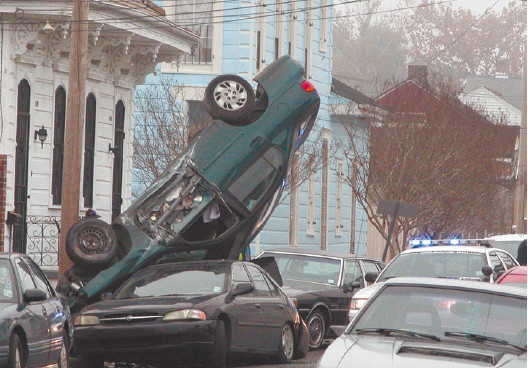
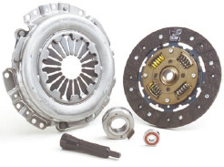

«Смотри, как я могу!»
Часто в связи с ДТП вспоминается старый анекдот:
Руководство BMW решило поставить на автомобили «черные ящики», подобные тем, которые стоят в самолетах, чтобы выяснить наиболее частые причины аварий. Оказалось, что последние слова водителей автомобилей в Европе были бессвязными восклицаниями ужаса, а вот в России последние слова перед аварией звучали так: «Вася, смотри, как я могу!»
Статистика утверждает, что множество ДТП связано с тем, что недавно получившие права водители решили продемонстрировать свое умение. Особенно этим страдают молодые люди.
Совет
Если какой-либо маневр (к примеру, полицейский разворот) прекрасно получался у вас на компьютерном симуляторе или на игрушечной машинке (рис. 2.17), то прежде, чем начать его выполнение в реальной дорожной обстановке, попробуйте так развернуться на специальной площадке, предназначенной для тренировки навыков экстремального и контр-аварийного вождения.

Рис. 2.17. Игрушечный автомобиль очень отличается от настоящего, и правила управления ими разные
Результатом демонстрации «как я могу» обычно становятся разбитые автомобили, сбитые пешеходы, травмированные пассажиры как своего авто, так и чужих (рис. 2.18). Ведь мало теоретически представлять, как выполняется тот или иной маневр из арсенала высшего водительского мастерства, каждое подобное действие требует наработки навыка, сходного с условным рефлексом, и только тогда оно может быть успешным и безопасным.

Рис. 2.18. «Смотри, как я могу!»
При выполнении экстремальных маневров неопытный водитель не соблюдает скоростной режим, часто путается в последовательности действий, вместо подгазовки начинает жать на тормоз и т. д. А ведь реальная дорожная обстановка – это отнюдь не картинка на компьютерном мониторе, она не прощает подобных ошибок. И, не справившись с управлением, начинающий водитель становится причиной тяжелого ДТП.
Примечание
В соответствии со статистикой, наибольшее количество ДТП по причине «Смотри, как я могу!» приходится на долю тех водителей, кому автомобиль подарили. Например, по случаю 18– или 20-летия. Те же, кто приобрел машину за свои деньги, реже становятся героями сводок дорожно-постовой службы.
Случается, что умение «как я могу» демонстрирует не владелец автомобиля, а его друг или девушка. Молодой хозяин машины, только-только получивший права на управление транспортным средством, еще с трудом представляет себе обязанности, связанные с такими правами, и охотно уступает руль (особенно в случае подаренного автомобиля) тому, кто попросит. Бывает даже, что, только получив права, водитель начинает демонстрировать друзьям «как нужно делать», то есть пытается обучить их искусству управления автомобилем. И ладно еще, если бы это делалось на специальной площадке, на крайне низких скоростях, чтобы максимально снизить вероятность несчастного случая. Но подобные «обучающие маневры» происходят обычно либо на городских улицах (хорошо, если ночью, когда пешеходов практически нет), либо на кольцевой дороге или загородной трассе. В результате не только разбивается собственный автомобиль, но страдают и другие машины, а также пешеходы. Кроме того, травмы получает и водитель, и его «ученик», да и ДТП с летальным исходом не так уж, к сожалению, редки в такой ситуации.
Примечание
Если вы надеетесь, что ваш приятель послушает увещевания: «Езжай потише, не дави так на газ», – то можете быть уверены, что этого не произойдет. И вовсе не потому, что он не хочет вас слушать, он просто не умеет! А вы – отнюдь не инструктор и не мастер автовождения, и ваш автомобиль не предназначен для обучения. Вы не можете контролировать и корректировать действия «ученика» (к примеру, с помощью дополнительного комплекта педалей). Поэтому неприятностей никак не избежать, и хорошо, если дело закончится лишь мелкими повреждениями автомобиля.
Кроме непосредственной опасности, существует еще неприятность другого рода: автомобиль страдает в любом случае, даже если дело обходится без ДТП. Известно, что у учебных автомобилей (на которых обучаются в школах вождения) очень часто «горит» сцепление (рис. 2.19), ведь ученики, пока научатся им пользоваться, буквально истерзают несчастный узел.

Рис. 2.19. Элементы сцепления
Также частенько на учебных машинах разбивают бампер и блок-фары при попытке вписаться в гараж, место для парковки. Но эти повреждения обычно незначительны, так как скорости на площадках совсем невелики. Чего нельзя сказать о выполнении маневра «Смотри, как я могу!» – он-то как раз предполагает максимальную скорость, с ревом двигателя (неоправданно вырабатывается ресурс двигателя!) и визгом покрышек (стираются протекторы!). При такой скорости там, где учебный автомобиль отделывается небольшими царапинами, собственный будет солидно поврежден. Ну а «ученик» за рулем «позаботится» и о сцеплении, как и положено в учебном автомобиле.
Совет
Не стоит демонстрировать «как я могу», пока вы не будете на 100 % уверены, что действительно можете, а также в безопасности данного маневра для окружающих Тем более не следует пускать за руль друзей, обучать вождению симпатичных девушек и т. д. Кроме неприятностей, повреждения автомобиля, а то и тяжелого ДТП, вы ничего не получите.